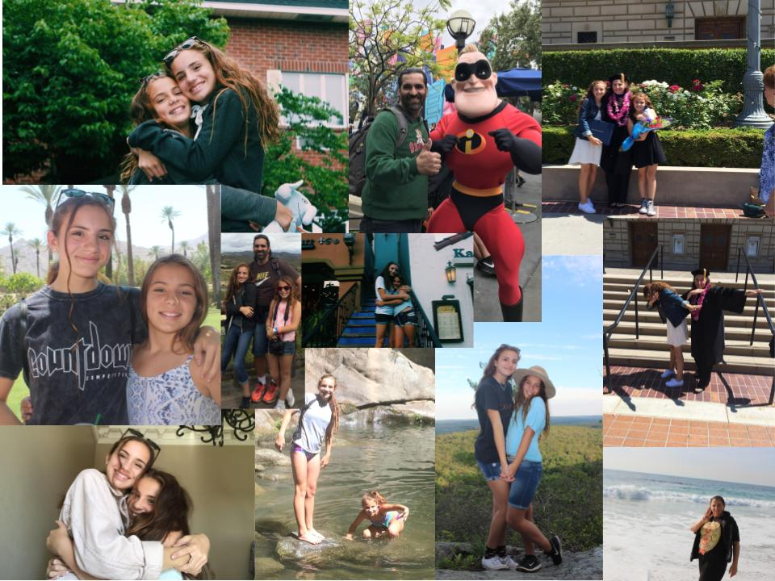
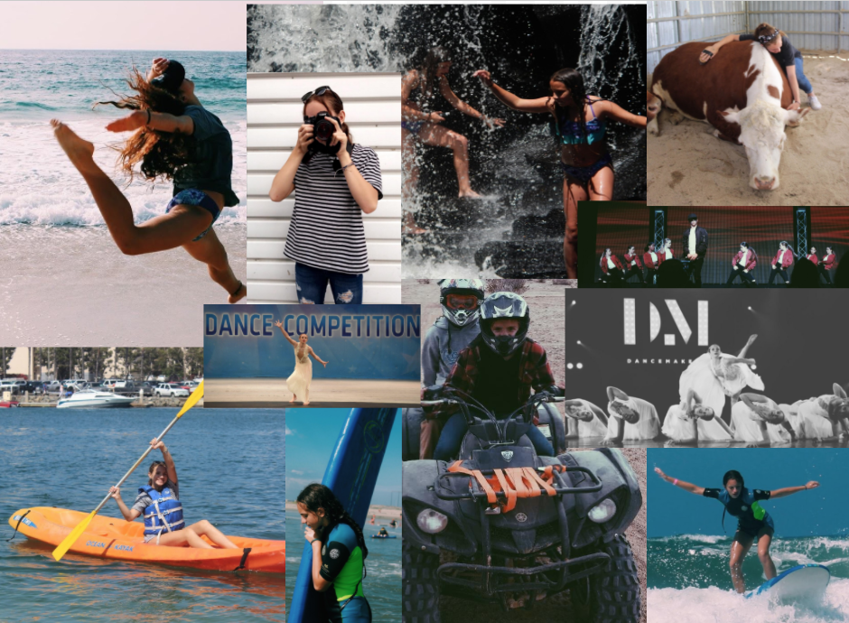

Family Life:
I live with my mom, dad, little sister and my dog and cats. My mom is psychologist in the FBI and my dad is a architect. Together they are both so educated and fantastic parents. My little sister hands downs is my best friend and twin all in one, she is so funny and I would do anything for her. My family life at home is so supportive, loving and caring. They have helped me overcome so many things and I love them so much words could not explain.

Skills:
Some skills I have are photoshop, coding, and IMovie on the computers. I am also a very avid writer. I am an also skilled dancer and runner. I am also very good at managing my time and staying organized. I also excel in all my classes and I have had a 4.0 GPA since sixth grade. I am very good at having patience with people and helping others learn new things.
Hobbies and Interests:
I enjoy dancing everyday at Elevation Studios. On top of that I love to choreograph dances and teach them to other people. I also love to surf with my family every Sunday at Huntington Beach the heart of Surf City. Adding on, I love taking photos and editing footage. I also love exploring new places and traveling. I also love listening to music. I also love yoga. I am very interested in poetry and helping animals as well.
